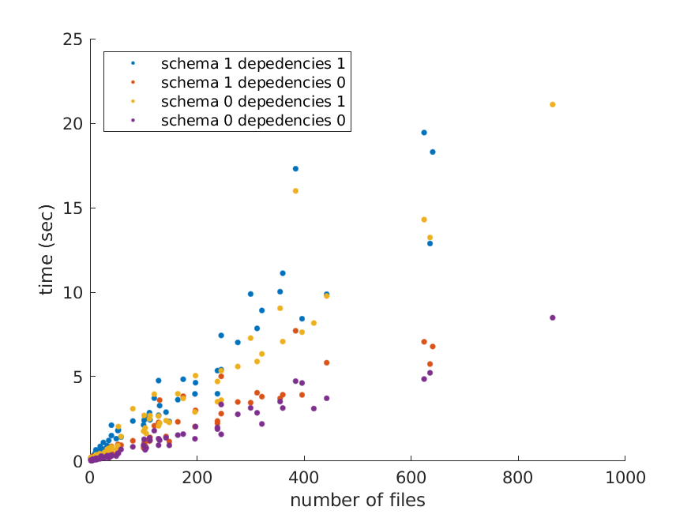

Performance
bids-matlab’s performance may vary
depending on which options you choose for indexing with bids.layout.
Relying on the BIDS schema ('use_schema', true) to only include files that comply with it
may slow down performance a bit.
Index dependencies ('index_dependencies', true) to detect files
with explicit dependencies between them
(for example when a fieldmap mentions that is intended for a specific bold run)
is much slower and you may consider setting this to false
when if you know that you have no such dependencies in your dataset.

layout indexing performance depending on chosen options